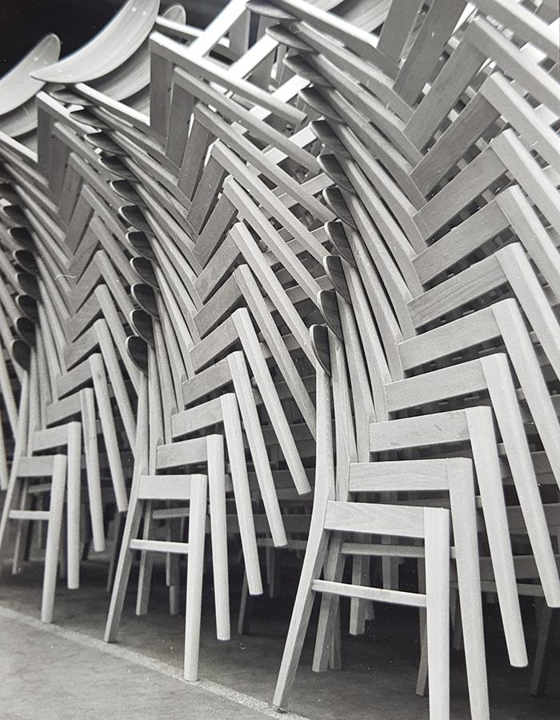

<!DOCTYPE htlml>
<htlm>
    <head>
        <title>Farstrup funertur</title>
        <meta name="descripton" content="THIS IS THE DECRIPTION">
        <link rel="stylesheet" href="styles.css" />
    </head>
    <body>
        <header class="main-header">
            <nav class= "nav main-nav">
                <ul>
                    <li><a href="index.html">HOME</a></li>
                    <li><a href="webshop.html">Webshop</a></li>
                    <li><a href="about.html">OmOS</a></li>
                    <li><a href="360-maker123.html">360</a></li>
                </ul>
            </nav>
            <hr>
            <h1 class="side-navn side-navn-stor">Farstrup Furniture</h1>
        </header>
        <section class ="content-section container">
            <h2 class="section-header">Om OS</h2>
            
            <p> 
                Farstrup Furniture attaches great importance to healthy sustainability and nurtures the greatest love and respect for the wood as a raw material. 
                Farstrup Furniture equals Danish craftsmanship and the wood in the factory goes through countless skilled hands; 
                carpenters, upholsterers, seamstresses etc. before customers sit in either their very personal chair or in a chair with personality.
                Craftmanship is paramount at Farstrup Furniture and is still 100% “Made in Denmark”.
                Common to all our furniture is the precious wood, usually more than 100 years old, the quality of the processing, and of course only the best leather and fabric qualities. 
            </p>
            <p>Farstrup Furniture was founded in 1910 as a sawmill. The location close to the beautiful Langesø woodlands west of Odense was optimal. 
                At the time the transport of the large wooden logs was done by horse-drawn carriage.
                The manufacture of chairs started only in 1918 and thus became the basis for the growth that 
                characterized Farstrup Furniture until today. .
            </p>
        </section>
        <footer class ="main-footer">
            <div class ="container main-footer-container">
            <h3 class = "side-F">Farstrup Furniture</h3>
            <ul class="nav footer-nav">
                Vestergade 107 - CopyRight DS
                <li>
                    <a href="https://farstrup.dk/en/" target="_blank">
                        
                    </a>
                </li>
            </ul>
        </div>
        </footer>
     </body>
</htlm>